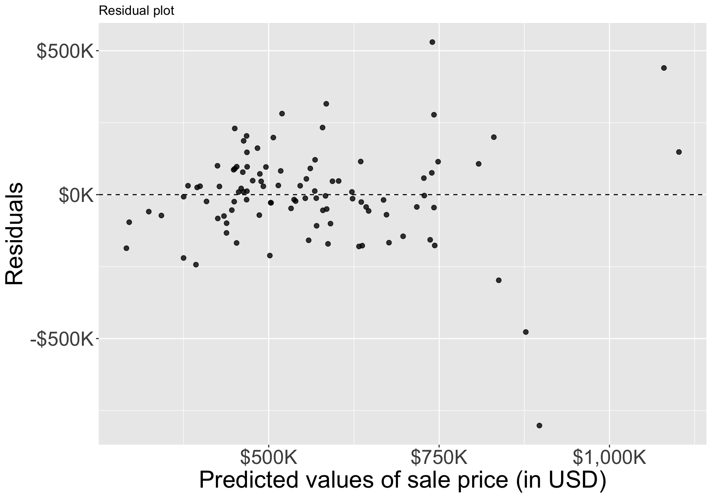

STA35B: Statistical Data Science 2
Multiple regression extends single predictor regression by allowing multiple predictors \(x_1, x_2, x_3, \ldots,\):
\[y = b_0 + b_1 x_1 + b_2 x_2 + \cdots\]
loans_full_schema data with tidyingloans <- loans_full_schema |>
mutate(
credit_util = total_credit_utilized / total_credit_limit,
bankruptcy = as.factor(if_else(public_record_bankrupt == 0, 0, 1)),
verified_income = droplevels(verified_income)
) |>
rename(credit_checks = inquiries_last_12m) |>
select(interest_rate, verified_income, debt_to_income, credit_util, bankruptcy, term, credit_checks, issue_month)loans |>
slice_head(n = 5) |>
kableExtra::kbl(linesep = "", booktabs = TRUE, align = "rlrrrr") |>
kableExtra::kable_styling(
bootstrap_options = c("striped", "condensed"),
latex_options = c("striped", "scale_down", "hold_position"),
full_width = FALSE
)| interest_rate | verified_income | debt_to_income | credit_util | bankruptcy | term | credit_checks | issue_month |
|---|---|---|---|---|---|---|---|
| 14.07 | Verified | 18.01 | 0.5475952 | 0 | 60 | 6 | Mar-2018 |
| 12.61 | Not Verified | 5.04 | 0.1500347 | 1 | 36 | 1 | Feb-2018 |
| 17.09 | Source Verified | 21.15 | 0.6613483 | 0 | 36 | 4 | Feb-2018 |
| 6.72 | Not Verified | 10.16 | 0.1967323 | 0 | 36 | 0 | Jan-2018 |
| 14.07 | Verified | 57.96 | 0.7549077 | 0 | 36 | 7 | Mar-2018 |
| variable | description |
|---|---|
| interest_rate | Interest rate on the loan, annual percentage. |
| verified_income | Categorical var: whether the borrower’s income source/amount have been verified |
| debt_to_income | total debt of the borrower divided by their total income. |
| credit_util | what fraction of credit they utilizing |
| bankruptcy | Indicator 0/1: whether the borrower has a past bankruptcy in their record |
| term | The length of the loan, in months. |
| issue_month | The month and year the loan was issued |
| credit_checks | Number of credit checks in the last 12 months |
Recall we fit a linear regression model w/ a categorical predictor with two levels:
[1] "0" "1"| term | estimate | std.error | statistic | p.value |
|---|---|---|---|---|
| (Intercept) | 12.338 | 0.053 | 231.490 | 0 |
| bankruptcy1 | 0.737 | 0.153 | 4.819 | 0 |
bankruptcy1: refers to level “1”. The slope estimate is the estimated difference in interest_rate of level “1” from level “0”.interest_rate for level “0” (reference level)\[ \widehat{\texttt{interest_rate}} = b_0 + b_1 \times \texttt{bankruptcy} \]
Let’s now consider a 3-level categorical variable like verified_income:
[1] "Not Verified" "Source Verified" "Verified" | term | estimate | std.error | statistic | p.value |
|---|---|---|---|---|
| (Intercept) | 11.10 | 0.08 | 137.18 | 0 |
| verified_incomeSource Verified | 1.42 | 0.11 | 12.79 | 0 |
| verified_incomeVerified | 3.25 | 0.13 | 25.09 | 0 |
\[\begin{align} \widehat{\texttt{interest_rate}} &= 11.10 \\ &+ 1.42 \times \texttt{verified_income}_{\texttt{Source Verified}} \\ &+ 3.25 \times \texttt{verified_income}_{\texttt{Verified}} \end{align}\]
The regression model equation now has two indicator variables.
verified_income value is…
Suppose we want to construct model for interest_rate using not just bankruptcy, but also other variables:
\[\begin{align} &\widehat{\texttt{interest_rate}} = b_0 \\ &+ b_1 \times \texttt{verified_income}_{\texttt{Source Verified}} \\ &+ b_2 \times \texttt{verified_income}_{\texttt{Verified}} \\ &+ b_3 \times \texttt{debt_to_income} \\ &+ b_4 \times \texttt{credit_util} \\ &+ b_5 \times \texttt{bankruptcy} \\ &+ b_6 \times \texttt{term} \\ &+ b_7 \times \texttt{credit_checks} \\ &+ b_8 \times \texttt{issue_month}_{\texttt{Jan-2018}} \\ &+ b_9 \times \texttt{issue_month}_{\texttt{Mar-2018}} \end{align}\]
\[\begin{align} SSE = e_1^2 + \cdots + e_{10000}^2 = \sum_{i=1}^n e_i^2. \end{align}\]
lm(response ~ .) to fit a linear model using ALL predictors except for response
| term | estimate | std.error | statistic | p.value |
|---|---|---|---|---|
| (Intercept) | 1.89 | 0.21 | 9.01 | 0.00 |
| verified_incomeSource Verified | 1.00 | 0.10 | 10.06 | 0.00 |
| verified_incomeVerified | 2.56 | 0.12 | 21.87 | 0.00 |
| debt_to_income | 0.02 | 0.00 | 7.43 | 0.00 |
| credit_util | 4.90 | 0.16 | 30.25 | 0.00 |
| bankruptcy1 | 0.39 | 0.13 | 2.96 | 0.00 |
| term | 0.15 | 0.00 | 38.89 | 0.00 |
| credit_checks | 0.23 | 0.02 | 12.52 | 0.00 |
| issue_monthJan-2018 | 0.05 | 0.11 | 0.42 | 0.67 |
| issue_monthMar-2018 | -0.04 | 0.11 | -0.39 | 0.70 |
The fitted model from previous slide has regression equation:
\[ \begin{aligned} &\widehat{\texttt{interest_rate}} = 1.89 \\ &+ 1.00 \times \texttt{verified_income}_{\texttt{Source Verified}} \\ &+ 2.56 \times \texttt{verified_income}_{\texttt{Verified}} \\ &+ 0.02 \times \texttt{debt_to_income} \\ &+ 4.90 \times \texttt{credit_util} \\ &+ 0.39 \times \texttt{bankruptcy} \\ &+ 0.15 \times \texttt{term} \\ &+ 0.23 \times \texttt{credit_checks} \\ &+ 0.05 \times \texttt{issue_month}_{\texttt{Jan-2018}} \\ &- 0.04 \times \texttt{issue_month}_{\texttt{Mar-2018}} \end{aligned} \]
Categorical predictors verified_income and issue_month: we have two coefficients for each.
term (=length of loan) to 0 in a meaningful way.lm(interest_rate ~ bankruptcy), we found a coefficient of 0.74, while for lm(interest rate ~ .), we found a coefficient of 0.386 for bankruptcy.Single-variable linear regression: \(R^2\) helps determine amount of variability in response explained by model
\[ \begin{aligned} R^2 &= 1 - \frac{\text{variability in residuals}}{\text{variability in the outcome}}\\ &= 1 - \frac{s_{\text{residuals}}^2}{s_{\text{outcome}}^2} \end{aligned} \]
The adjusted \(R^2\) penalizes the inclusion of unnecessary predictors
\[\begin{align} R_{adj}^{2} &= 1 - \frac{s_{\text{residuals}}^2 / (n-k-1)} {s_{\text{outcome}}^2 / (n-1)} \\ &= 1 - \frac{s_{\text{residuals}}^2}{s_{\text{outcome}}^2} \times \frac{n-1}{n-k-1} \end{align}\]
–> –> –>
How do we decide which variables to include when devising a linear model?
lm(interest_rate ~ ., data = loans) results in a linear model with \(R^2_{adj} = 0.2597\), using variables verified_income, debt_to_income, credit_util, bankruptcy, term, credit_checks, issue_month.
verified_income: 0.2238debt_to_income: 0.2557credit_util: 0.1916bankruptcy: 0.2589term: 0.1468credit_checks: 0.2484issue_month: 0.2598issue_month has adjusted \(R^2\) of 0.2598 > 0.2597, we drop issue_month from the model.Start with a model with no predictors. This always has \(R^2_{adj}=0\).
verified_income: 0.05926debt_to_income: 0.01946credit_util: 0.06452bankruptcy: 0.00222term: 0.12855credit_checks: -0.0001issue_month: 0.01711term has largest \(R^2_{adj}\), and is \(>0\), so we add this variable to the modelverified_income: 0.16851debt_to_income: 0.14368credit_util: 0.20046bankruptcy: 0.13070credit_checks: 0.12840issue_month: 0.14294credit_util yields largest \(R^2_{adj}\) increase, and is \(> 0.12855\), so add it to model as a predictor.Look at openintro::duke_forest dataset
| price | bed | bath | area | year_built | cooling | lot |
|---|---|---|---|---|---|---|
| 1,520,000 | 3 | 4 | 6,040 | 1,972 | central | 0.97 |
| 1,030,000 | 5 | 4 | 4,475 | 1,969 | central | 1.38 |
| 420,000 | 2 | 3 | 1,745 | 1,959 | central | 0.51 |
| 680,000 | 4 | 3 | 2,091 | 1,961 | central | 0.84 |
| 428,500 | 4 | 3 | 1,772 | 2,020 | central | 0.16 |
| 456,000 | 3 | 3 | 1,950 | 2,014 | central | 0.45 |
| 1,270,000 | 5 | 5 | 3,909 | 1,968 | central | 0.94 |
| Variable | Description |
|---|---|
| price | Sale price, in USD |
| bed | # of bedrooms |
| bath | # of bathrooms |
| area | Area of home, in square feet |
| year_built | Year the home was built |
| cooling | Cooling system: central or other (other is baseline) |
| lot | Area of the entire property, in acres |
Figure 1
Let’s now try to predict price from area: single linear regression
| term | estimate | std.error | statistic | p.value |
|---|---|---|---|---|
| (Intercept) | 116652.33 | 53302.46 | 2.19 | 0.03 |
| area | 159.48 | 18.17 | 8.78 | 0.00 |

Now model price w/ multiple variables
m_full <- lm(price ~ area + bed + bath + year_built + cooling + lot, data = duke_forest)
m_full |> broom::tidy() |> kable(digits=0)| term | estimate | std.error | statistic | p.value |
|---|---|---|---|---|
| (Intercept) | -2910715 | 1787934 | -2 | 0 |
| area | 102 | 23 | 4 | 0 |
| bed | -13692 | 25928 | -1 | 1 |
| bath | 41076 | 24662 | 2 | 0 |
| year_built | 1459 | 914 | 2 | 0 |
| coolingcentral | 84065 | 30338 | 3 | 0 |
| lot | 356141 | 75940 | 5 | 0 |
\[\begin{align} \widehat{\texttt{price}} &= -2,910,715 + 102 \times \texttt{area} - 13,692 \times \texttt{bed} \\ &+ 41,076 \times \texttt{bath} + 1,459 \times \texttt{year_built}\\ &+ 84,065 \times \texttt{cooling}_{\texttt{central}} + 356,141 \times \texttt{lot} \end{align}\]
update()lm() output and allows you to specify what changes you’d like to make| term | estimate | std.error | statistic | p.value |
|---|---|---|---|---|
| (Intercept) | -3056731 | 1960957 | -2 | 0 |
| bed | 15103 | 27528 | 1 | 1 |
| bath | 91076 | 24034 | 4 | 0 |
| year_built | 1521 | 1002 | 2 | 0 |
| coolingcentral | 67210 | 33015 | 2 | 0 |
| lot | 447962 | 80120 | 6 | 0 |
areaarea: 0.5062bed: 0.5929bath: 0.5816year_built: 0.5826cooling: 0.5595lot: 0.4894bed improves adjusted \(R^2\), so we eliminate this
bed and area: 0.51bed and bath: 0.586bed and year_built: 0.586bed and cooling: 0.563bed and lot: 0.493bed, we have the following model:m_full <- lm(price ~ area + bed + bath + year_built + cooling + lot, data = duke_forest)
update(m_full, . ~ . - bed, data = duke_forest) |> broom::tidy()# A tibble: 6 × 5
term estimate std.error statistic p.value
<chr> <dbl> <dbl> <dbl> <dbl>
1 (Intercept) -2952641. 1779079. -1.66 0.100
2 area 99.1 22.3 4.44 0.0000249
3 bath 36228. 22799. 1.59 0.116
4 year_built 1466. 910. 1.61 0.111
5 coolingcentral 83856. 30215. 2.78 0.00669
6 lot 357119. 75617. 4.72 0.00000841\[ \begin{aligned} \widehat{\texttt{price}} &= -2,952,641 + 99 \times \texttt{area}\\ &+ 36,228 \times \texttt{bath} + 1,466 \times \texttt{year\_built}\\ &+ 83,856 \times \texttt{cooling}_{\texttt{central}} + 357,119 \times \texttt{lot} \end{aligned} \]
Backward elimination and forward selection are widely taught and have been around for a long time
olsrr bcs pindex enzyme_test liver_test age gender alc_mod alc_heavy y
1 6.7 62 81 2.59 50 0 1 0 695
2 5.1 59 66 1.70 39 0 0 0 403
3 7.4 57 83 2.16 55 0 0 0 710
Stepwise Summary
-------------------------------------------------------------------------
Step Variable AIC SBC SBIC R2 Adj. R2
-------------------------------------------------------------------------
0 Full Model 736.390 756.280 586.665 0.78184 0.74305
1 alc_mod 734.407 752.308 584.276 0.78177 0.74856
2 gender 732.494 748.406 581.938 0.78142 0.75351
3 age 730.620 744.543 579.638 0.78091 0.75808
-------------------------------------------------------------------------
Final Model Output
------------------
Model Summary
-------------------------------------------------------------------
R 0.884 RMSE 184.276
R-Squared 0.781 MSE 33957.712
Adj. R-Squared 0.758 Coef. Var 27.839
Pred R-Squared 0.700 AIC 730.620
MAE 137.656 SBC 744.543
-------------------------------------------------------------------
RMSE: Root Mean Square Error
MSE: Mean Square Error
MAE: Mean Absolute Error
AIC: Akaike Information Criteria
SBC: Schwarz Bayesian Criteria
ANOVA
-----------------------------------------------------------------------
Sum of
Squares DF Mean Square F Sig.
-----------------------------------------------------------------------
Regression 6535804.090 5 1307160.818 34.217 0.0000
Residual 1833716.447 48 38202.426
Total 8369520.537 53
-----------------------------------------------------------------------
Parameter Estimates
------------------------------------------------------------------------------------------------
model Beta Std. Error Std. Beta t Sig lower upper
------------------------------------------------------------------------------------------------
(Intercept) -1178.330 208.682 -5.647 0.000 -1597.914 -758.746
bcs 59.864 23.060 0.241 2.596 0.012 13.498 106.230
pindex 8.924 1.808 0.380 4.935 0.000 5.288 12.559
enzyme_test 9.748 1.656 0.521 5.887 0.000 6.419 13.077
liver_test 58.064 40.144 0.156 1.446 0.155 -22.652 138.779
alc_heavy 317.848 71.634 0.314 4.437 0.000 173.818 461.878
------------------------------------------------------------------------------------------------
Stepwise Summary
--------------------------------------------------------------------------
Step Variable AIC SBC SBIC R2 Adj. R2
--------------------------------------------------------------------------
0 Base Model 802.606 806.584 646.794 0.00000 0.00000
1 liver_test 771.875 777.842 616.009 0.45454 0.44405
2 alc_heavy 761.439 769.395 605.506 0.56674 0.54975
3 enzyme_test 750.509 760.454 595.297 0.65900 0.63854
4 pindex 735.715 747.649 582.943 0.75015 0.72975
5 bcs 730.620 744.543 579.638 0.78091 0.75808
--------------------------------------------------------------------------
Final Model Output
------------------
Model Summary
-------------------------------------------------------------------
R 0.884 RMSE 184.276
R-Squared 0.781 MSE 33957.712
Adj. R-Squared 0.758 Coef. Var 27.839
Pred R-Squared 0.700 AIC 730.620
MAE 137.656 SBC 744.543
-------------------------------------------------------------------
RMSE: Root Mean Square Error
MSE: Mean Square Error
MAE: Mean Absolute Error
AIC: Akaike Information Criteria
SBC: Schwarz Bayesian Criteria
ANOVA
-----------------------------------------------------------------------
Sum of
Squares DF Mean Square F Sig.
-----------------------------------------------------------------------
Regression 6535804.090 5 1307160.818 34.217 0.0000
Residual 1833716.447 48 38202.426
Total 8369520.537 53
-----------------------------------------------------------------------
Parameter Estimates
------------------------------------------------------------------------------------------------
model Beta Std. Error Std. Beta t Sig lower upper
------------------------------------------------------------------------------------------------
(Intercept) -1178.330 208.682 -5.647 0.000 -1597.914 -758.746
liver_test 58.064 40.144 0.156 1.446 0.155 -22.652 138.779
alc_heavy 317.848 71.634 0.314 4.437 0.000 173.818 461.878
enzyme_test 9.748 1.656 0.521 5.887 0.000 6.419 13.077
pindex 8.924 1.808 0.380 4.935 0.000 5.288 12.559
bcs 59.864 23.060 0.241 2.596 0.012 13.498 106.230
------------------------------------------------------------------------------------------------| step | variable | adj_r2 |
|---|---|---|
| 1 | liver_test | 0.444 |
| 2 | alc_heavy | 0.550 |
| 3 | enzyme_test | 0.639 |
| 4 | pindex | 0.730 |
| 5 | bcs | 0.758 |
adj_r2 to “Adjusted \(R^2\)”, etc.kable() comes from package kableExtra.kableExtra for more functionality.There are many commonly used model selection strategies.